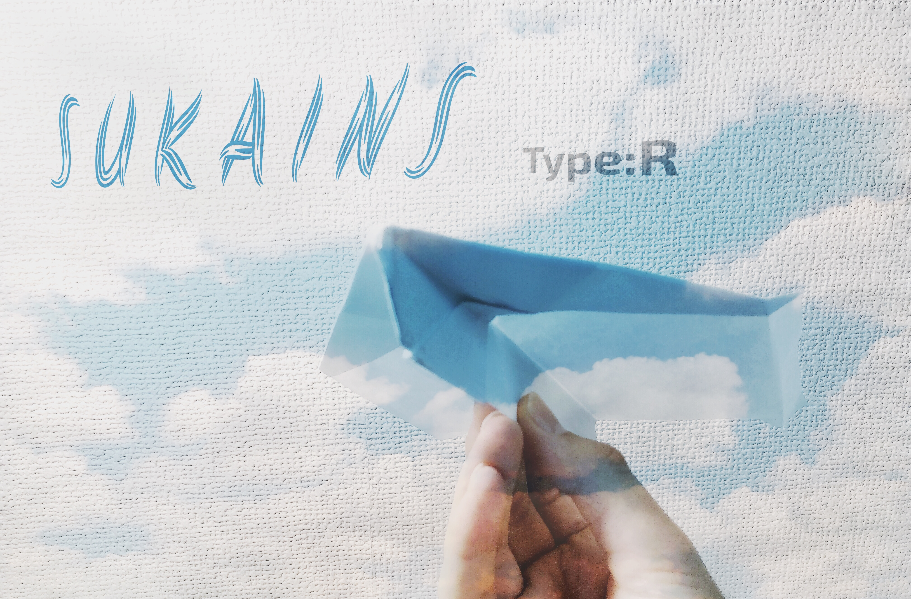
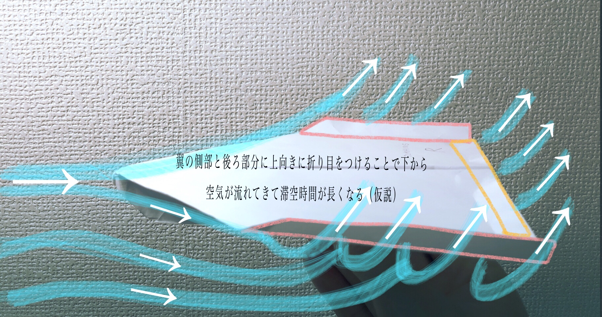

- 木材、金属、アクリルなど様々な素材・材料を切断する。
- 切断にあたって、素材・材料に対する理解を深める。
- また、その安全性や技術について知ること。
- セーバーソーを使った素材・材料の切断。
- その他、切断道具について（各道具の特徴・用途など。）
- ジグゾーを使って文字・模様を切り取る。
記録係として、メンバーの素材・材料の切断の様子を写真に納めた。
切断ツールも素材・材料も沢山あったので、どのツールで何を切断するのか話し合いながら作業した。
切断ツール画像

素材・材料 画像

ツールの詳細画像:セーバーソー

ツールの詳細画像：ジグゾー
